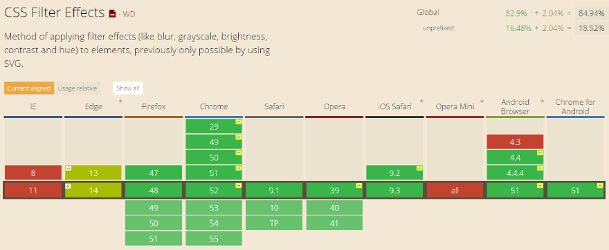
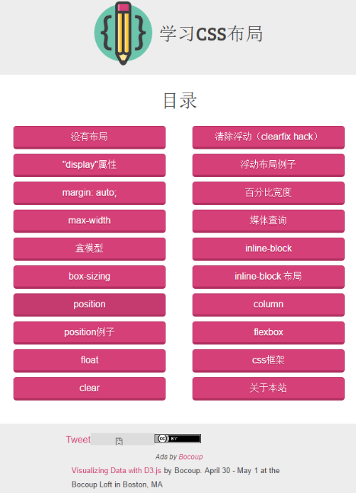
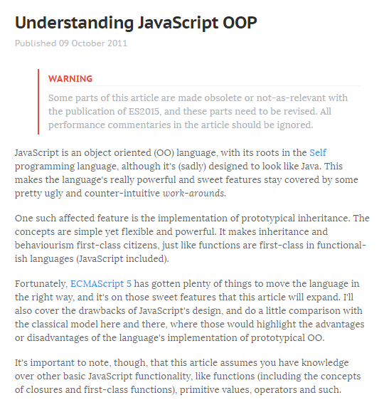
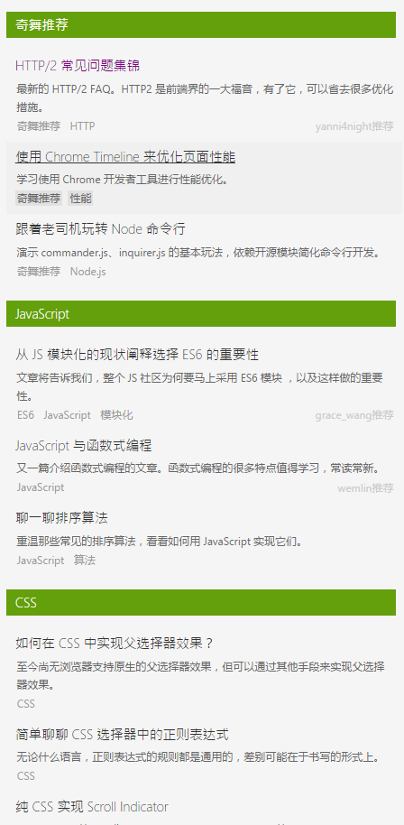
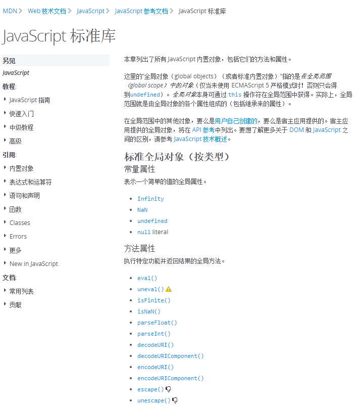
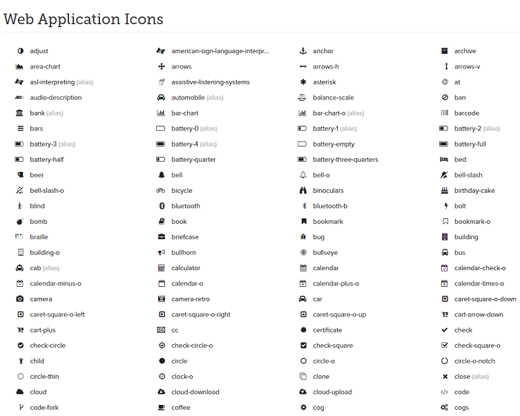

本文主要介绍一些对自己技术有很大帮助的网站，后续也将更新，感谢这些网站的相关人员，致敬!
Can I Use
can i use网站很常见，很多博客里面介绍一些CSS/JS/H5新特性的时候，会用到它，可以用来查看某一特性在各浏览器的支持程度，使用效果如下图：
学习CSS布局
该网站虽然功能比较单一，只介绍CSS布局相关的知识，但是界面和介绍比较通俗易懂，适合CSS初学者学习，如下图：
Understanding JavaScript OOP
本文是一篇2011年的国外文章，主要介绍JavaScript OOP。推荐这篇文章的原因并不是写的有多好，而是个人觉得此文比较适合作为慢慢阅读英文博客的开始，另外该站还有一些其他技术博客可供赏阅。
奇舞周刊
本站每周会更新一次，更新的内容都是一些比较有质量的前端知识。
free-programming-books
该资源提供广大网友贡献的一些编程书籍列表，涉及领域很多，每个领域也有细分多个分支，如果有需要可以上去看看，不过大多是英文版。
JavaScript 标准库
该资源由MOZILIA MDN提供，算是一份比较详尽的JavaScript参考文档，唯一的缺点是由网友贡献，并不算完善。
FontAwesome
提供字体图标，我介绍这个并不只是简单的引用后当图标来用—-你可以将字体文件下载下来，然后用PS，按照自己需求，做成透明雪碧图，可换颜色。
 ☜☜☜ wechat 『『『 reward 点击扫码打赏 ~~~ ^_^ 』』』alipay ☞☞☞
☜☜☜ wechat 『『『 reward 点击扫码打赏 ~~~ ^_^ 』』』alipay ☞☞☞